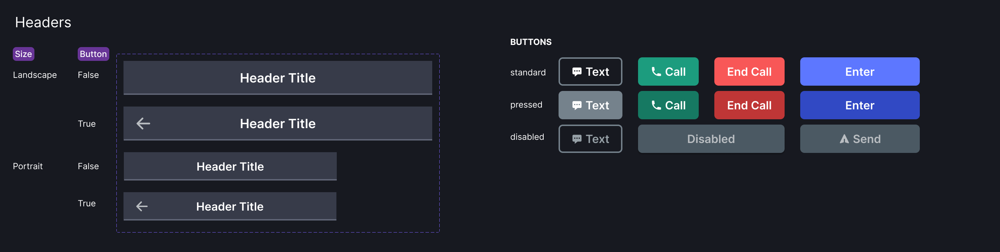
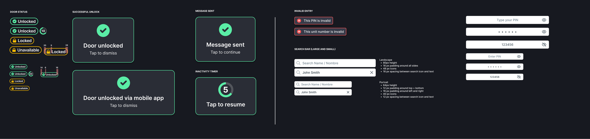
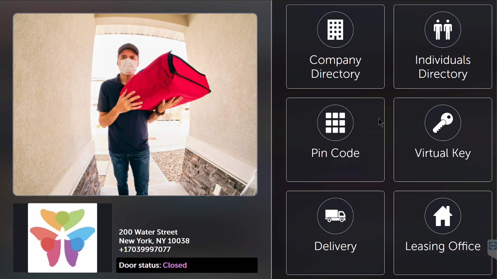
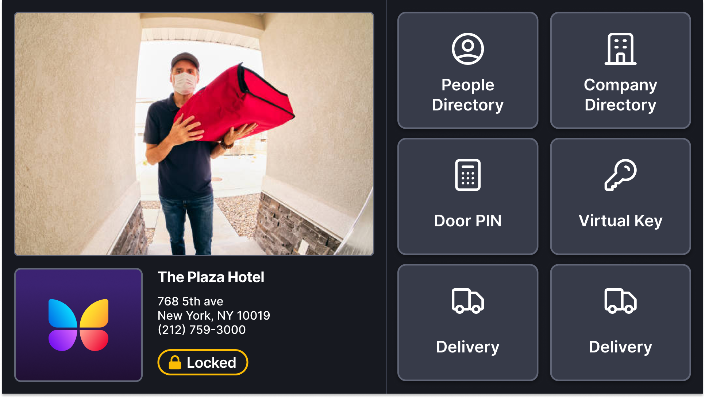
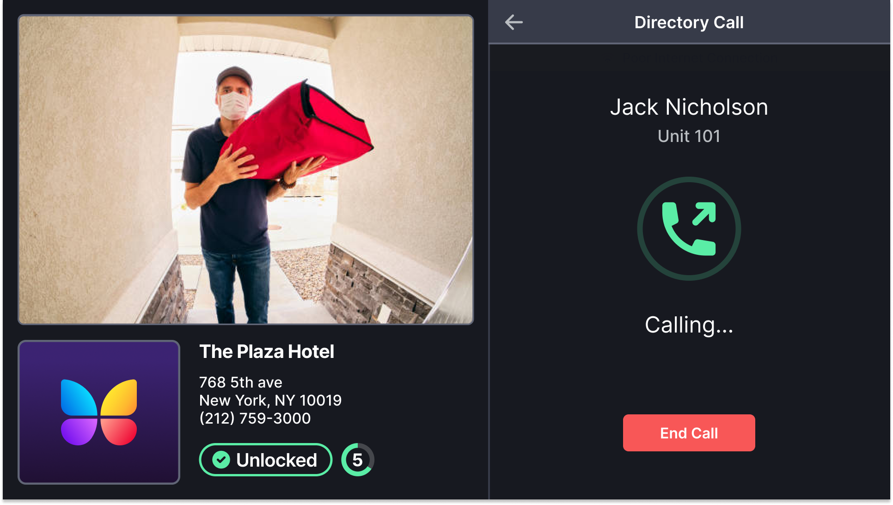
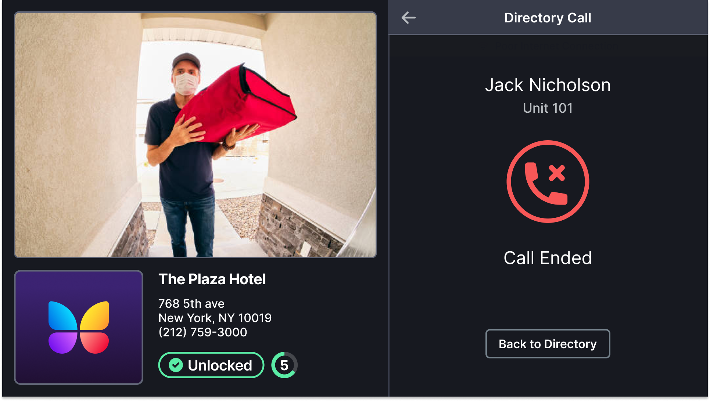
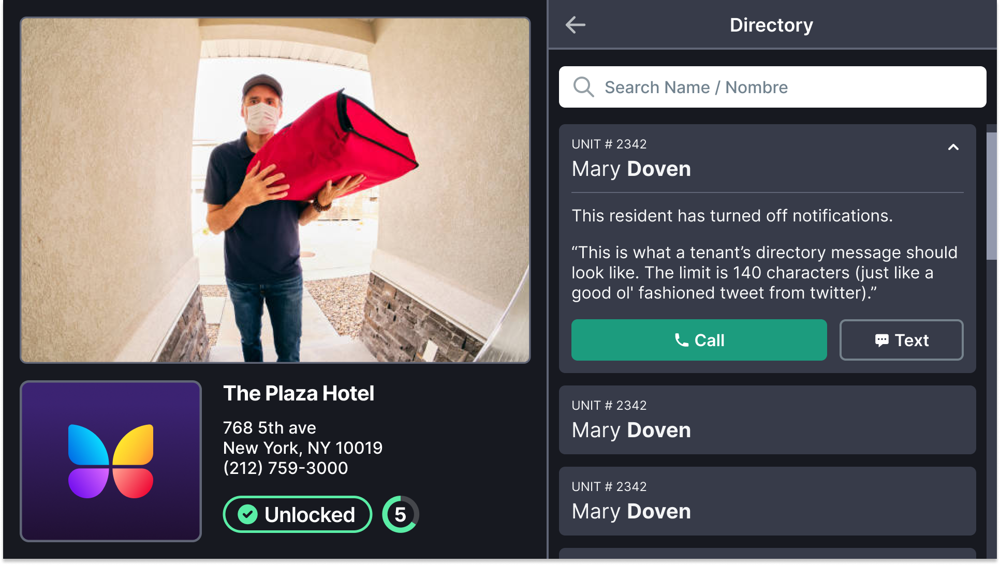
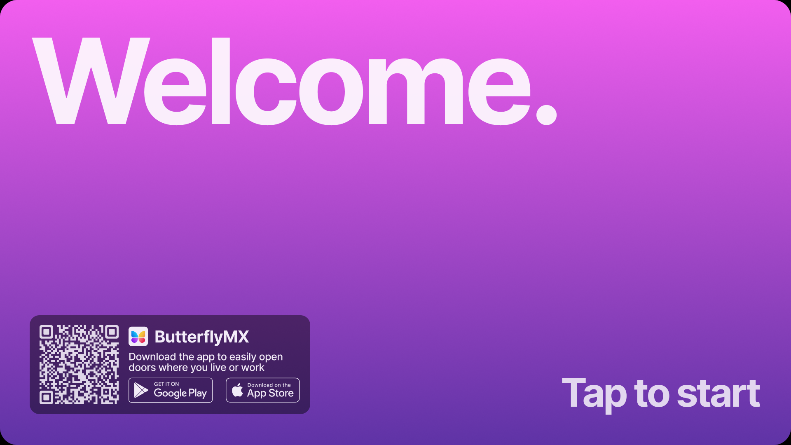
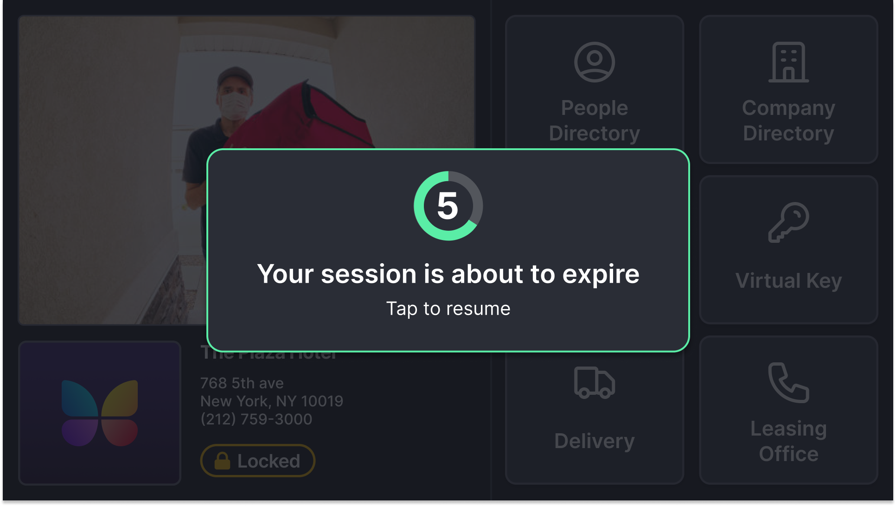
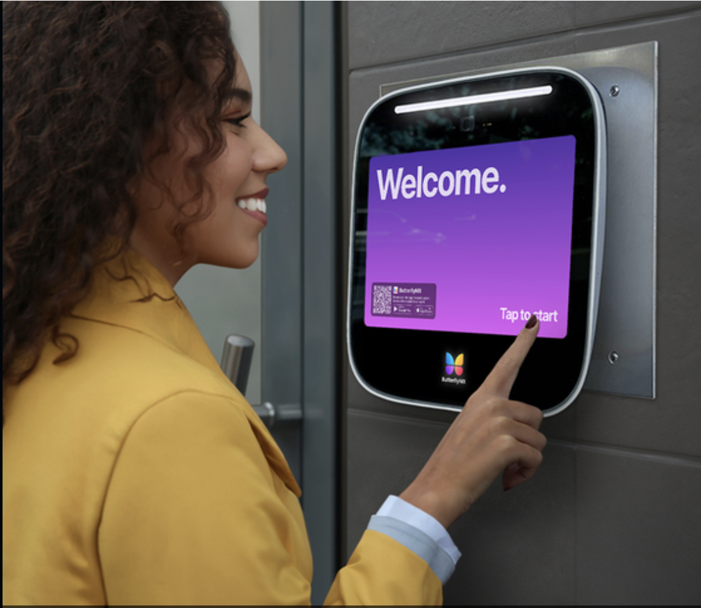

Outcomes
The redesign also produced the Monarch style guide, a design-QA process with engineering that outlived the project, and an update path for the 7" intercom line. A new engineering team onboarded onto the system without design hand-holding.
Context
Reliability had become a top company priority: connectivity, performance, and usability across a growing fleet of intercoms. The initiative had three workstreams: software stability, updated hardware, and the UI. Design owned the third. The catch: product wanted to move fast and rebuild the existing screens exactly as they were.
The Advocacy Moment
The existing UI had problems a rebuild would simply preserve: inconsistent styles and components, poor contrast, confusing flows for simple interactions, and almost no visibility of system status, at a touchscreen where every user is a first-time user. Rebuilding it 1:1 meant paying the full engineering cost and keeping every usability debt.
Since every screen had to be rebuilt from scratch anyway, better UI was nearly free: the same components, built once, just designed right. That was the case I brought to the stakeholder review.
We had one week to make it. I ran a heuristic evaluation across every intercom screen. The team laid them all out, annotated issues as a group, and walked leadership through what the current UI actually looked like up close: contrast failures, inconsistent type and icons, wasted space, missing affordances. Leadership bought in. Design got its window, bounded by one rule: no impact to the delivery timeline.
Process
Components Before Screens
To guarantee consistency at speed, we inverted the usual order: identify and design every component style first, then assemble screens. With shared components agreed, three designers could divide and conquer the screen inventory without divergence. I took the making-a-call flow, Virtual Key, and the leasing office screens, and collaborated with Yahya on the home screen, where the concepts I brought to our working sessions became the shipped direction.
Moodboard to System
We aligned on direction using the company's brand values as evaluation criteria, exploring layout, color, sizing, and type against them rather than personal taste.
The Monarch style guide and component library
The lasting artifact of the redesign is the system underneath it. Identifying every component style before any screen work meant the screens assembled themselves from one agreed kit, and that kit became the Monarch style guide and component library: type, color, iconography, spacing, and the interactive components every screen shares. It established the update path for the 7" intercom line, a design QA process with engineering and product that outlived the project, and an onboarding surface solid enough that a brand-new engineering team ramped onto the intercom without design hand-holding.


Before and After


Designing the system's voice: status states
The most consequential UX gap was system status. Visitors and residents couldn't tell whether a call was ringing, whether the door had actually unlocked, or how long it would stay open. I redesigned the full state language of the intercom: calling, no answer, unlocked-with-countdown, and confirmation for every entry method (PIN, delivery pass, virtual key).



The screensaver: design fixing a hardware symptom
The hardware workstream surfaced a physical problem: the static home screen, displayed around the clock, was burning into panels across the fleet, and panels in direct sun were aging fastest. The hardware fix was a future-generation problem; the screens in the field needed an answer now.
I led the effort to replace the persistent home screen with an animated welcome screen: high-visibility, inviting, always moving. Yahya built the animation; I designed the screen itself, including the welcome treatment, the tap-to-start prompt, and the app-download modal. It shipped to every intercom in the fleet and eliminated the burn-in pattern at its source. Over the following six months, support tickets for screen issues fell 24% across the fleet, avoiding an estimated $80–100K a year in installer dispatch costs. It's the project beat I'm proudest of: a design solution to a problem the hardware caused and couldn't yet fix, with the savings to show for it.


Rollout
The new UI shipped as a cross-platform Electron app (Windows, Linux, Mac) through an 8-phase migration, starting with the HQ building, expanding ring by ring to international properties. The base UI reached 4,908 buildings (~93% of the fleet), rising to 5,166 buildings (~99%) with peripheral support. A new engineering team was onboarded mid-rollout using the Monarch style guide, and the design-QA process we established with engineering became standard for intercom work after the project.
Where It Is Today
The current generation of the intercom carries this design language forward. The welcome screen now greets visitors on every panel, including the newest 8" hardware, and the status-state system (door locked/unlocked, method confirmation) remains the interaction backbone of the shipping product.


Reflection
The design work here was good; the timing judgment mattered more. Catching the rebuild window, making the case in business terms (same scope, better outcome) rather than design terms, is what turned a maintenance project into a product upgrade for the entire fleet. I claim the design wins here, not the platform ones: connectivity and hardware reliability were their own workstreams. Design's contribution was that every person standing at the door finally knew what the system was doing.